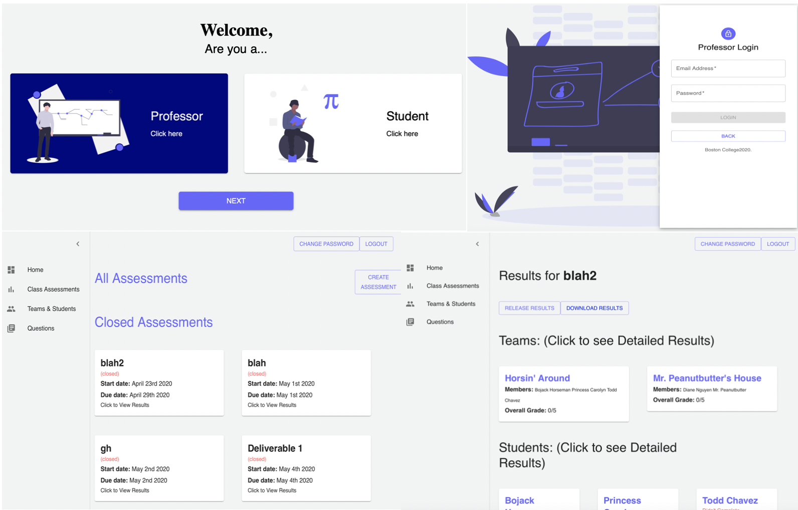
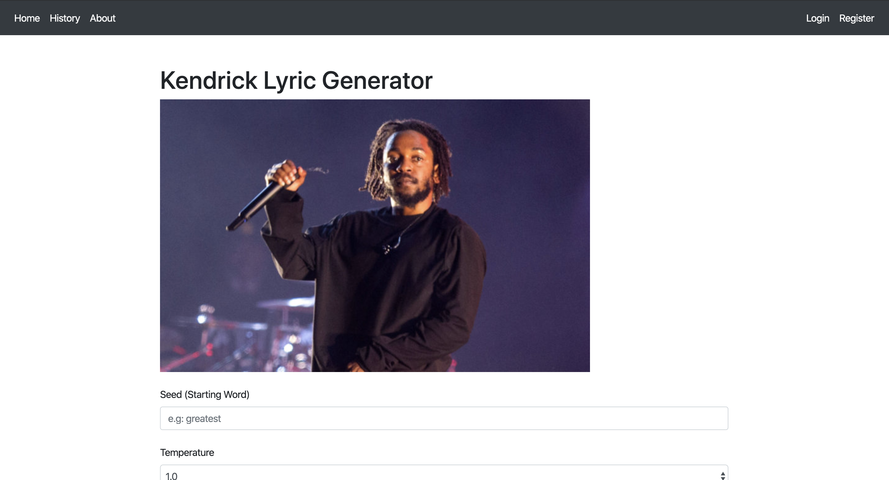
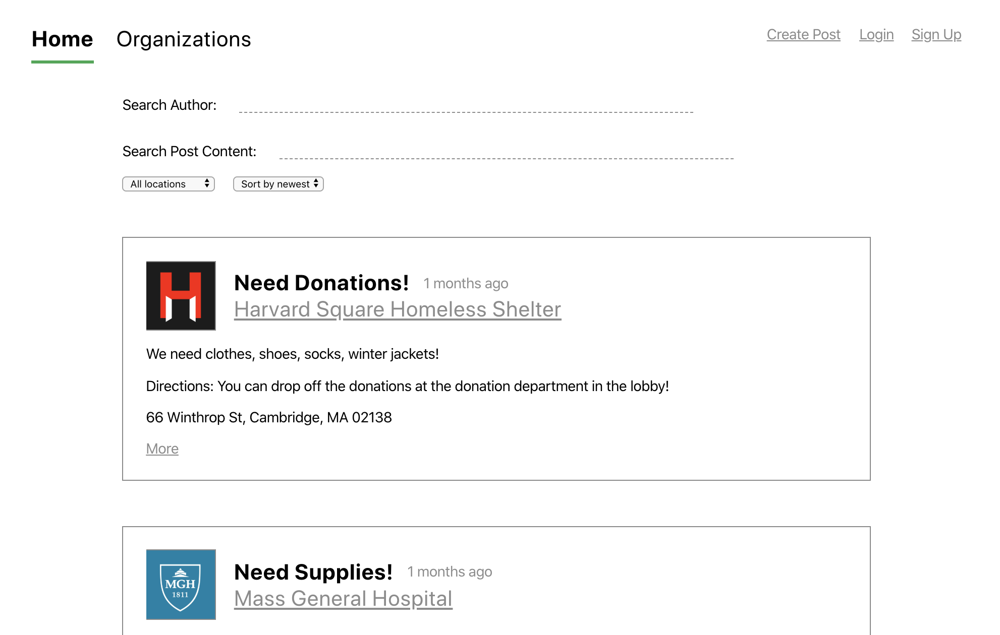
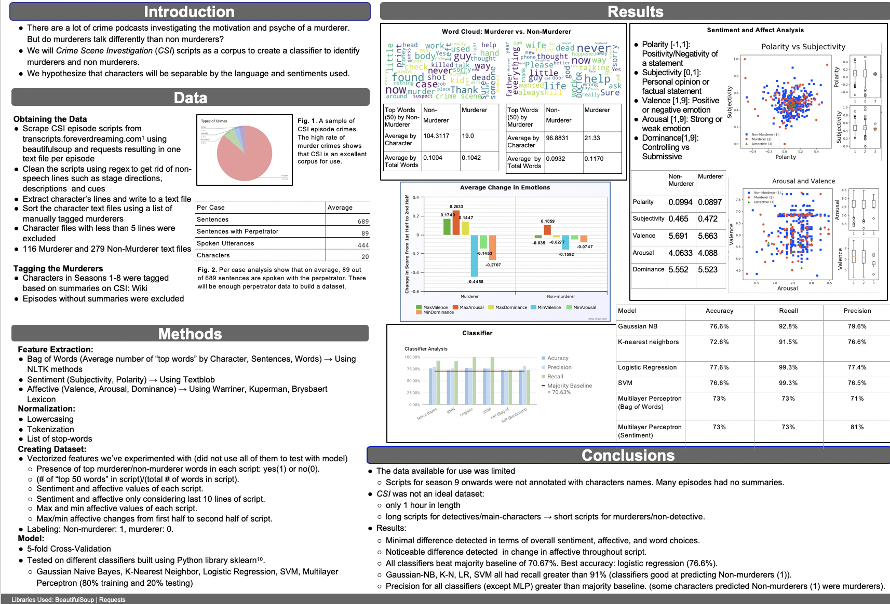

Donghyuk Kim (David)
B.A. in Computer Science, Boston College 2020
Pursuing M.S. in Computer Science, WPI 2021-2023
It is fascinating to think about how my past experiences have shaped who I am today. For instance, because I left my home country of South Korea and moved to the United States in 2006, I grew up to articulate my consciousness primarily in English. Life feels somewhat like walking down the nodes of an enormous decision tree; every decision I make, however small, leads to some sort of change. Though it is certainly fun to muse on what could have been, the real wonder lies in the great possibilities ahead.
I began my undergraduate endeavor as a pharmacy student, but I ended up finding my passion in the field of computer science. I received my B.A. in Computer Science from Boston College in May 2020. Starting in spring 2021, I will be furthering my computer science studies at Worcester Polytechnic Institute as an M.S. student. My interests are in the areas of artificial intelligence, machine learning, and natural language processing.
Besides studying computer science, my hobbies include weightlifting, hiking, investing, and watching movies.
I also love learning philosophy. One of my favorite philosophers is Ludwig Wittgenstein, who worked in the field of logic and
philosophy of language. I believe that much of the disharmony present in our society largely stems from the misuse and misunderstanding of language. I believe Wittgenstein's philosophy can illuminate our perception of the most fundamental
human experience.

Donghyuk Kim, Richard Yang, Alex Xu, Seunghyun Nam
Software Engineering CSCI3356 Project, Spring 2020

Donghyuk Kim

Donghyuk Kim, Max Bahar
Web App Development CSCI2254 Project, Spring 2020

More ProjectsDonghyuk Kim, Ashley Oh, Jessica Bolduc, Dipesh Patel
Natural Language Processing CSCI3349 Project, Fall 2019